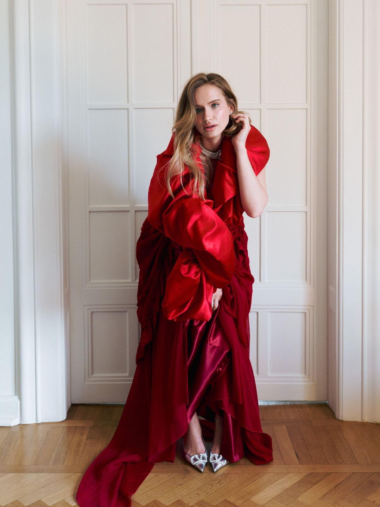
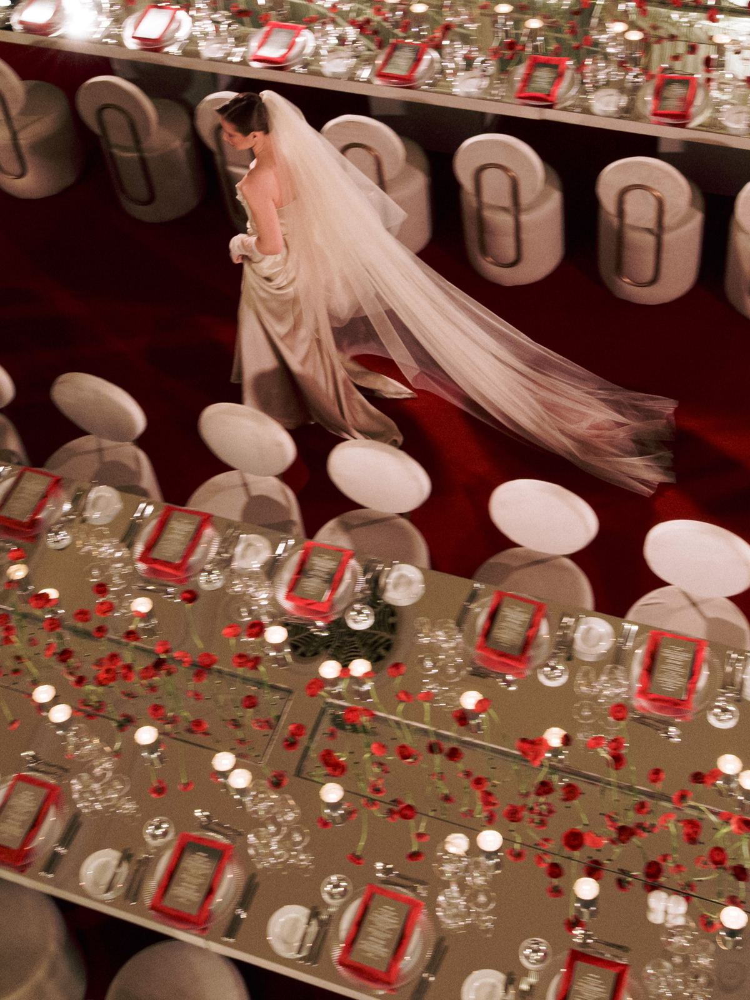

Номинация
Лучший красный
Свадьба Маргариты и Евгения в отеле «Астория»: знаменитый Зимний зал заново прочитан через драму красного и величие Древнего Рима. Архитектурные детали и свет превратили знакомое пространство в другое.
ALAI Magazine, Top15 Moscow